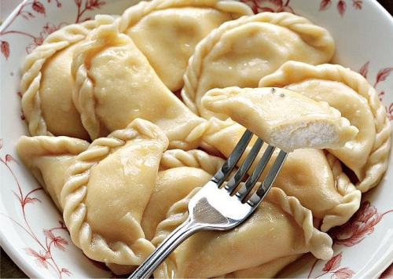

Varenyki

Description
Varenyky are Ukrainian national dish that is not inferior in popularity and importance even to borscht.
Ingredients
- milk
- water
- wheat flour
- sunflower oil
- salt
- bryndza cheese
- cottage cheese
- eggs
- garlic
Steps
- Start by making the dough. You need to pour the flour into a deep bowl, make a deepening inside and pour milk and water there. The dough can be kneaded by hand. At the end of the kneading, add sunflower oil. Leave the dough for 30 minutes.
- Meanwhile, prepare the filling: mix the cheese, bryndza cheese, eggs, breadcrumbs and garlic until smooth.
- Roll out the dough into a layer 2 millimeters thick and squeeze out slices of the same size. Put the filling in the middle and pinch the dough. If wanted, you can make a decorative braid on varenyk’s edge to make the dish look more elegant.
- Varenyky should be cooked in salted water for about 5 minutes. Then place in a deep plate and grease with butter. Varenyky taste best with sour cream, fried onions and bacon crisps.